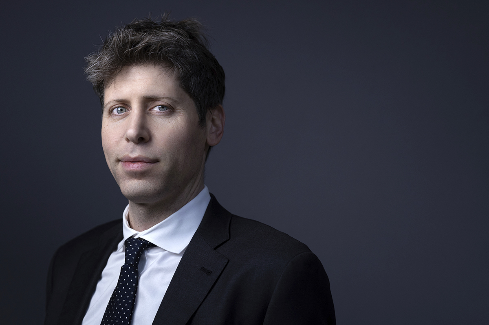

Sam Altman es un empresario, inversionista, programador y bloguero estadounidense que tiene el cargo de director ejecutivo de OpenAI

OpenAI es una empresa estadounidense de investigación de inteligencia artifical, comunmente conocida por su herramienta ChatGPT